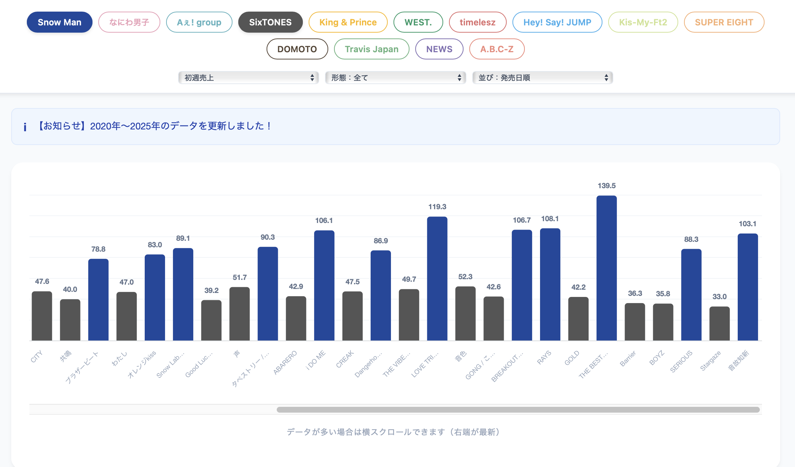
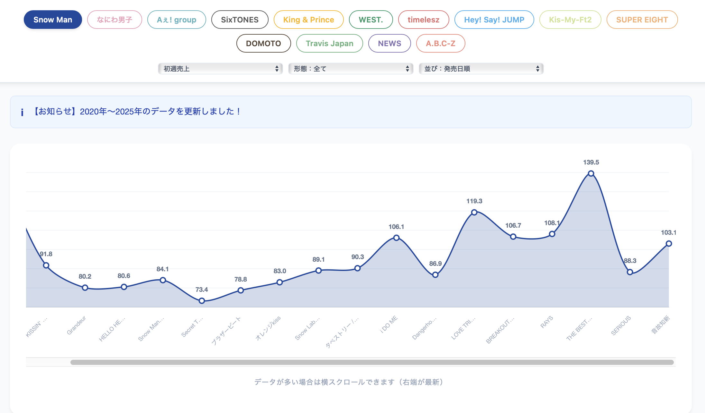
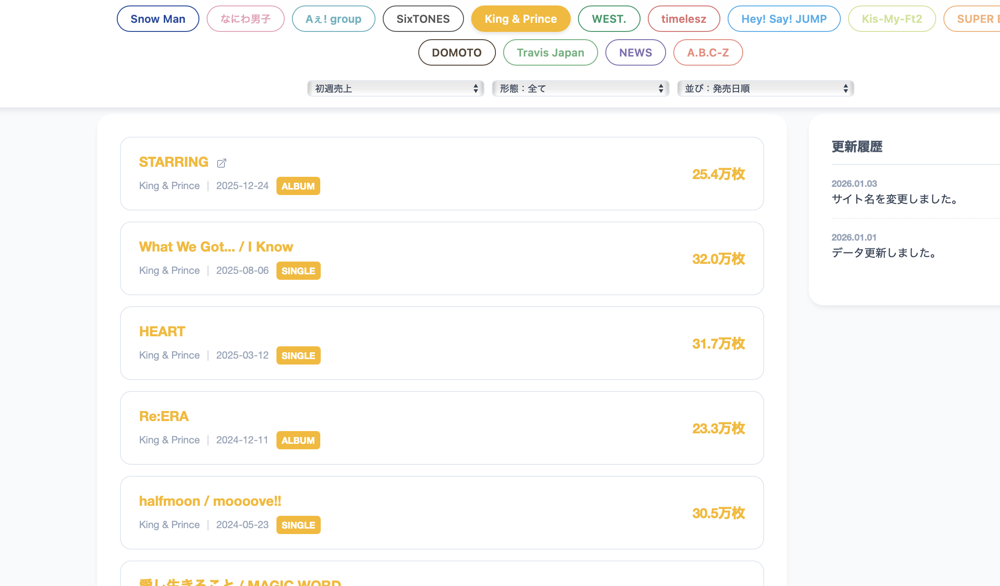

01
比較したいグループを複数選択する
複数のグループの売上規模を比較したい場合の手順です。
-
OPERATION 比較したいグループのボタンを複数選択します（例: Snow ManとSixTONES）。
-
RESULT データが棒グラフで表示され、売上規模の違いを一目で比較できます。最新および歴代の売上順での並び替えも可能です。

02
単一グループの推移を見る
特定の1グループの売上推移（トレンド）を確認したい場合の手順です。
-
OPERATION 見たいグループのボタンを1つだけ選択します（他の選択は外します）。
-
RESULT 自動的に折れ線グラフに切り替わり、最新から歴代までの時系列での売上変化（初動枚数の推移）が表示されます。

03
CDを購入する・詳細を見る
グラフの下にあるリストから、実際のCD購入ページや作品詳細ページへ移動できます。
-
OPERATION 画面下のリストから、気になる作品（シングル・アルバム）のタイトルをクリックします。
-
RESULT 最新CDの購入サイトや詳細情報ページへアクセスし、さらに詳しい情報を確認できます。
